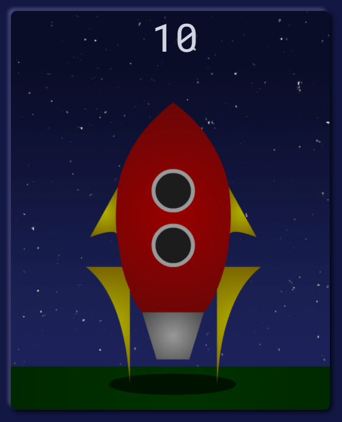
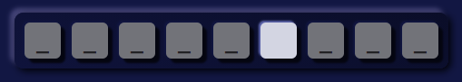
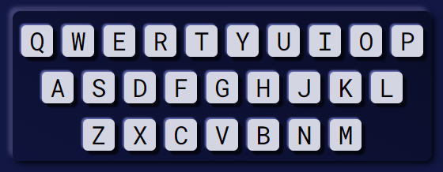
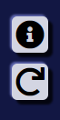

Crack the code and guess the space themed word to gain access to the rocket before it
leaves on its adventure without you. The word you need to guess is represented by a series of dashes,
each
representing a letter. Attempt to guess the word by selecting one letter at a time from the on
screen keyboard. Correct guesses will reveal the letter or letters within the word while incorrect
guesses will bring the countdown to lift off closer to 0, whether you are ready or not.

Keep track of the rockets launch progress here. For each incorrect guess the countdown will
go down by one as the rocket builds to liftoff.

Watch your correct guesses fill in the code word and use the new
information to attempt to decipher the rest. Each underscore ("_") represents a letter that needs to
be
guessed while completed letters will appear in the correct position in the word.

Select letters to guess by picking them on either the on screen keyboard or
by typing them on your own keyboard. Once you've made a guess that letter will turn grey to help you
keep track of your previous attempts. Once the game's over you can choose to play again by selecting
the "Play/Try again?" button or by pressing either space or enter on your keyboard.

If you'd like to read the instructions again you can select the "information" tile in the
top right corner or select the restart button if you fancy a new word.